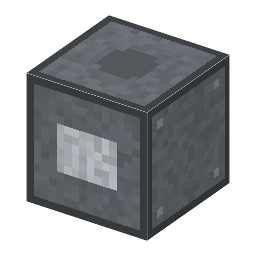

説明
①子ども 溶かした塩に電気を流して、マグネシウムを取り出す槽。
②学生 鋼6＋黒鉛棒（陽極）＋銅ケーブルで作る。10kW。無水の塩化マグネシウム1 → マグネシウム1＋塩素の袋1（20秒）。
③大人 陰極：Mg2+ + 2e- → Mg（軽いので浮く）、陽極：2Cl- → Cl2 + 2e-。塩素は塩酸に戻して、また使う。
④ガチ 1916年ダウ社がミシガンのかん水（地下の塩水）から、1941年テキサスで海水から作り始めた。
作り方
使い道
（このアイテムを使うレシピは無い）